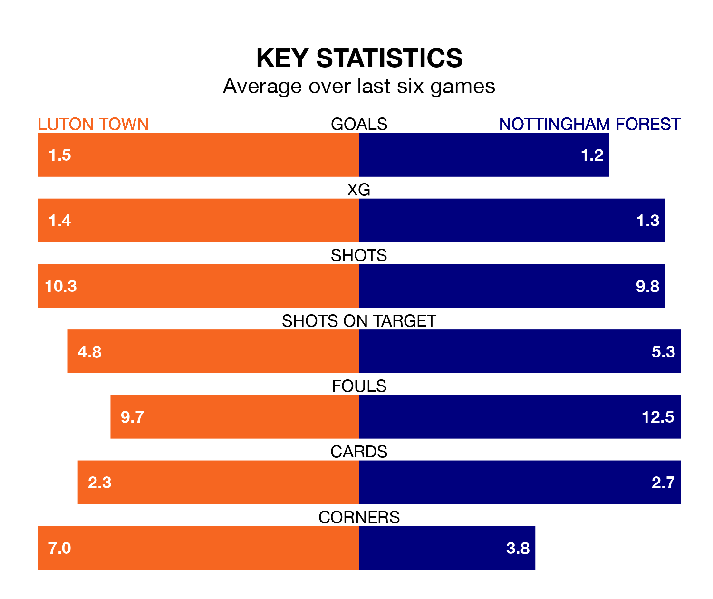

Saturday's match at Kenilworth Road sees two relegation candidates play each other, as 18th-ranked Luton Town host 17th-placed Nottingham Forest.
Luton have picked up 21 points from their first 21 Premier League games, with five wins and six draws.
That is three points less than the Tricky Trees have collected, having won six and drawn six.
Luton are in terrible form in the Premier League, with no wins and a draw from their last six games.
With a win and a draw over that period, Forest's form is better – they have taken four points from 18, compared to Town's one.
In the last 10 years, Luton and Forest have played each other on seven occasions. They won two each, and they drew three times.
On average, the Hatters scored 1.0 goal and the Tricky Trees 1.1 in those matches.
Their last meeting was on October 21, when they played out a 2-2 draw.
With 34 goals in 28 games so far this season, the Tricky Trees are scoring at below the league average rate with 1.2 goals per game. And they are conceding more than average, letting in 50 goals at a rate of 1.8 per game.
The Hatters are also below average scorers, with 1.5 goals per game, compared to a league average of 1.6. They have conceded 2.1 goals per game.
Luton's last match was on Wednesday, a 4-3 loss against AFC Bournemouth, with Chiedozie Ogbene, Ross Barkley and Tahith Chong getting the goals for the Hatters.
Forest lost 1-0 against Brighton and Hove Albion last time out, on Sunday.
Saturday's match will be refereed by Darren England, who has taken charge of seven Premier League games so far this season, issuing no red cards and booking 38 players. He has awarded one penalty.
The last Luton game England refereed was a 1-0 home win against Newcastle United on December 23. His last Forest match was their 3-2 loss away at Brentford on January 20.
Updated: 15:10 (UTC), 15/03/24